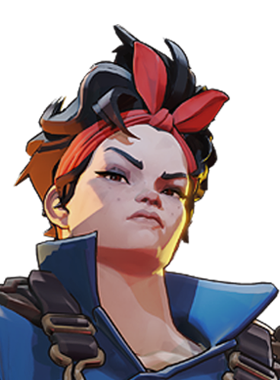

McGinnis
Domínio de área com torres e barreiras.

Domínio de área com torres e barreiras.
1.929.993 partidas analisadas · atualizado em 16/10/2026 as 21:22 · fonte: deadlock-api.com
Instala uma torreta de curta duração que atira em inimigos e causa dano espiritual contínuo.
Invoca um espírito que cura e restaura stamina de aliados próximos.
Cria uma parede no terreno que fere e retarda inimigos próximos, e pode ser detonada antes do tempo.
Dispara foguetes teleguiados numa área alvo por um tempo, retardando McGinnis enquanto dura.
1.567 partidas registradas com esta build.
🏆 Rodadas Monstruosas (800) · 🏆 Vigor Extra (800) · 🏆 Regeneração Mística (800) · 🏆 Taxa Extra (800) · 🏆 Lento místico (1.600) · 🏆 Regeneração Radiante (3.200) · 🏆 Emblema do Encantador (1.600) · 🏆 Surto Arcano (1.600) · 🏆 Expansão Mística (800) · 🏆 Resfriamento da compressão (1.600)
1.081 partidas registradas com esta build.
Revista Intensificadora (1.600) · Taxa Extra (800) · Vigor Extra (800) · Surto Arcano (1.600) · Lento místico (1.600) · Expansão Mística (800) · Emblema do Encantador (1.600) · Velocidade duradoura (1.600) · Regeneração Extra (800) · Rodadas Monstruosas (800)
903 partidas registradas com esta build.
Rodadas Monstruosas (800) · Revista Intensificadora (1.600) · Revista Estendida (800) · Rodadas rápidas (800) · Recarga Mercúrio (1.600) · Atacante Rápido (1.600) · Pé Ligeiro (1.600) · Botas de corrida (800) · Velocidade duradoura (1.600) · Regeneração Extra (800)
07/09: 50.9% → 26/10: 53.0% → 14/12: 55.3% → 01/02: 49.7% → 22/03: 48.1% → 10/05: 54.3% → 28/06: 52.7% → 16/08: 49.6% → 04/10: 47.0%